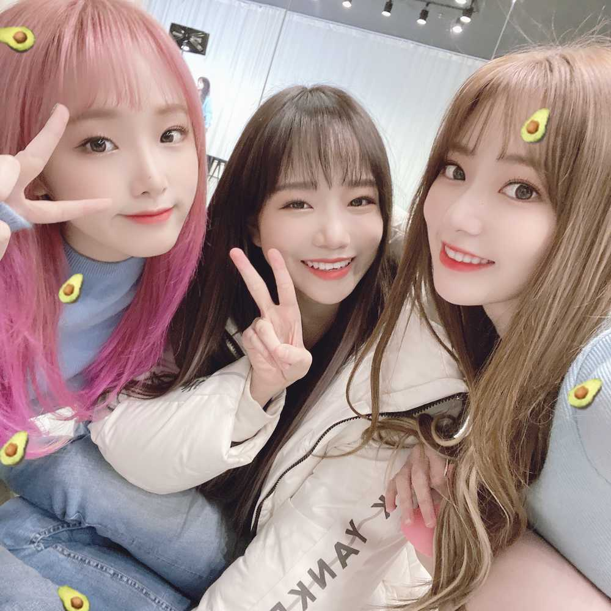

昨日のさくのき、聞いてくださいましたか？
聞いてくれて、ありがとうございます。
久々のラジオで、ちゃんとお話できたか不安でしたが…
私の気持ちが少しでも伝わっていれば嬉しいです😊
泣かないつもりだったんですが、WIZ*ONEのメッセージはダメだ〜😔😔泣いちゃうよ😔😔
みんなの笑顔が見れて、嬉しいです。ただ。
また来週もさくらの木の下で、이호を待ってますね☺️
어제의 사쿠노키 들어 주셨어요?
감사합니다 :)
오랜만의 라디오 라서 잘 이야기할 수 있었는지 불안했지만...
저 마음이 조금이라도 전해지고 있으면 기뻐요😊
울지 않을 생각이었는데, WIZ*ONE의 메시지는 안돼 😔😔 너무 좋아서 울어요 😔😔
위즈원 의 미소를 볼수 있어서 행박 이에요.
또 다음 주도 벚꽃 나무 아래에서 이호을 기다릴께요☺
